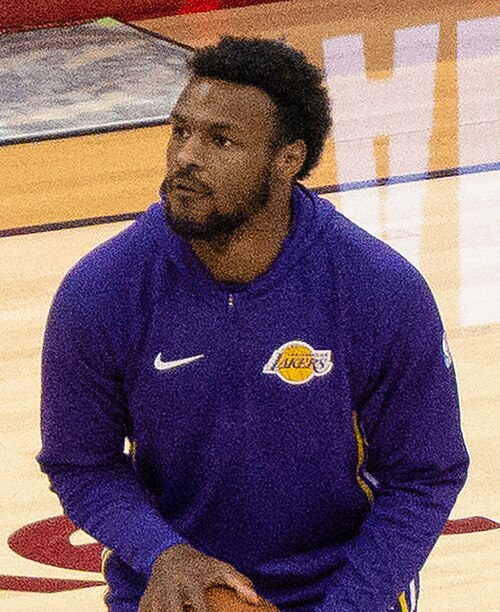

Regression to the mean
0.62
What a generation hands back, measured across 40 famous families.
Measured 21 years apart

6′ 1.5″An 1886 equation
called it to 0.4″
Five generations
Why great fortunes
walk back to average
Galton, 1886
Luck is not
inherited